Explore Huế
A Brief History
Huế was imperial capital of the Nguyen dynasty from 1802, with a walled citadel and tombs along the Perfume River. Royal pavilions, mandarin courts, and Buddhist pagodas record how Vietnamese rulers adapted Chinese court ritual in central Vietnam. Royal tomb avenues and Perfume River boat landings extend Nguyen imperial ritual into the central coast hinterland.
Attractions Map
Top Sights & Activities
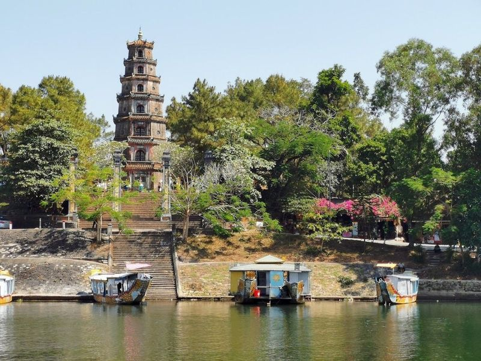
Thiên Mụ Pagoda
Thien Mu Pagoda, a renowned 7-story Buddhist temple constructed in 1601, is a prominent landmark in Hue city. Nestled along the Perfume River and surrounded by landscaped grounds, this ancient pagoda holds great spiritual significance and boasts an impressive architectural design. Visitors can immerse themselves in the rich historical narratives and explore the various structures within the pagoda.
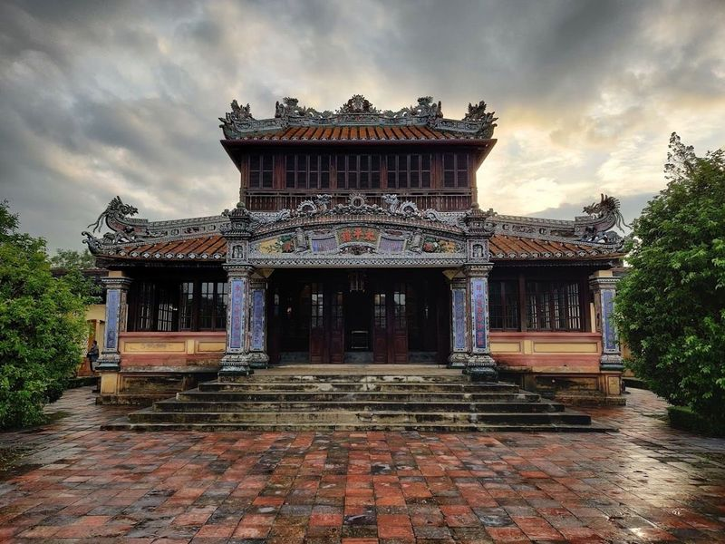
Hue Historic Citadel
The Hue Historic Citadel, also known as the Imperial City of Hue, is a significant attraction in Vietnam and a UNESCO World Heritage Site. It served as the royal palace for the Nguyen Dynasty for 140 years. The walled fortress spans 10 kilometers with impressive fortifications and features like the Imperial Enclosure and Forbidden Purple City. Visitors can explore attractions such as the ceremonial Thai Hoa Palace and Ngo Mon Gate within this historical complex.
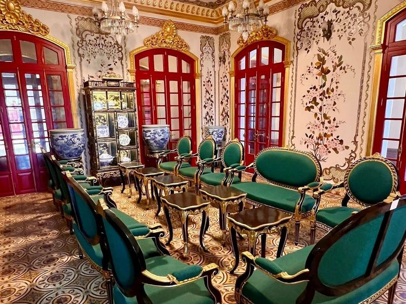
Kiến Trung Palace
Kien Trung Palace, nestled at the northern end of the Forbidden City, is a testament to Vietnam's royal history and architectural evolution. This remarkable site showcases a unique blend of Asian and European styles, particularly Indochine influences. Once the backdrop for Emperor Bao Dai's abdication, it symbolizes the end of Vietnam’s monarchy. Despite its destruction during wartime, recent restoration efforts have revived its former splendor.
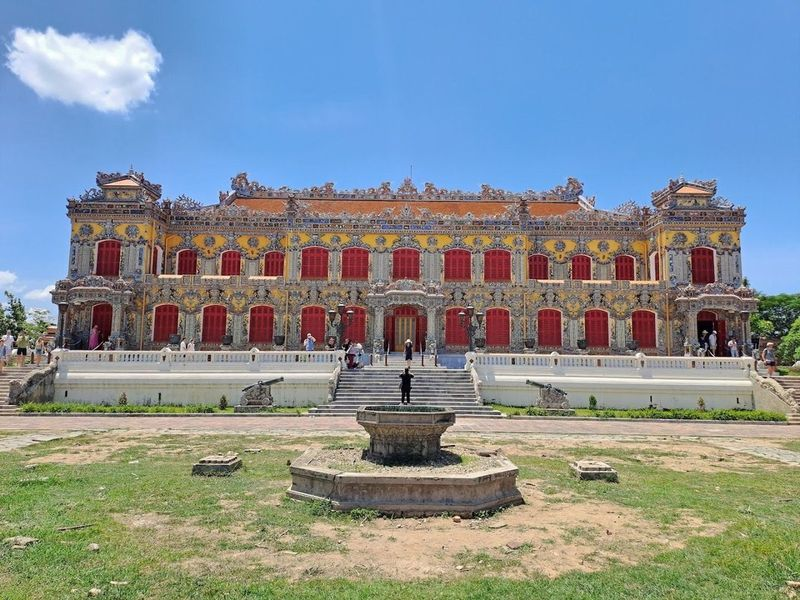
Hue Imperial City
The Hue Imperial City, a UNESCO World Heritage site, is a complex within the historical citadel of Hue. Once the capital of Vietnam, it boasts over 100 remarkable architectural structures such as The Noon Gate and Thai Hoa Palace. Visitors can explore the area by bicycle or cyclo to take in its intriguing history and captivating scenery.
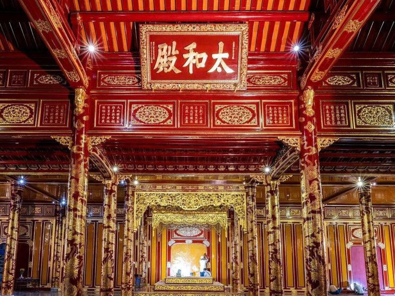
Thái Hòa Palace
Thai Hoa Palace, located in Hue, Vietnam, is a significant 19th-century structure within the Royal Palace. It served as the governing center for over a century under the Nguyen dynasty. The palace showcases traditional royal architecture adorned with intricate enameled bronzeware, gilding, and lacquer featuring symbolic dragon and cloud motifs. The Salutation Court in front of the palace was where important ceremonies took place.
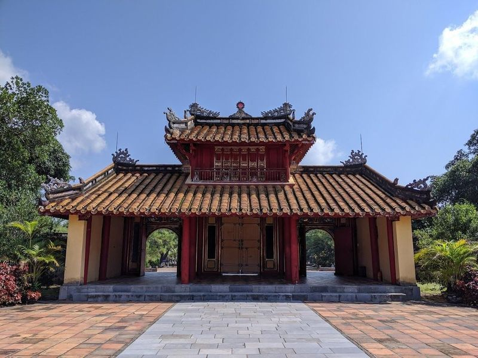
Mausoleum of Emperor Minh Mang
The Mausoleum of Emperor Minh Mang is part of a serene lakeside temple complex that also includes the tombs of other 19th-century emperors. Each tomb reflects the personality and taste of its respective emperor, with statues and monuments arranged to form natural poetry. The mausoleum itself features traditional Eastern architecture inspired by Confucianism and is located at the confluence of Ta Trach and Huu Trac rivers into the Huong River.
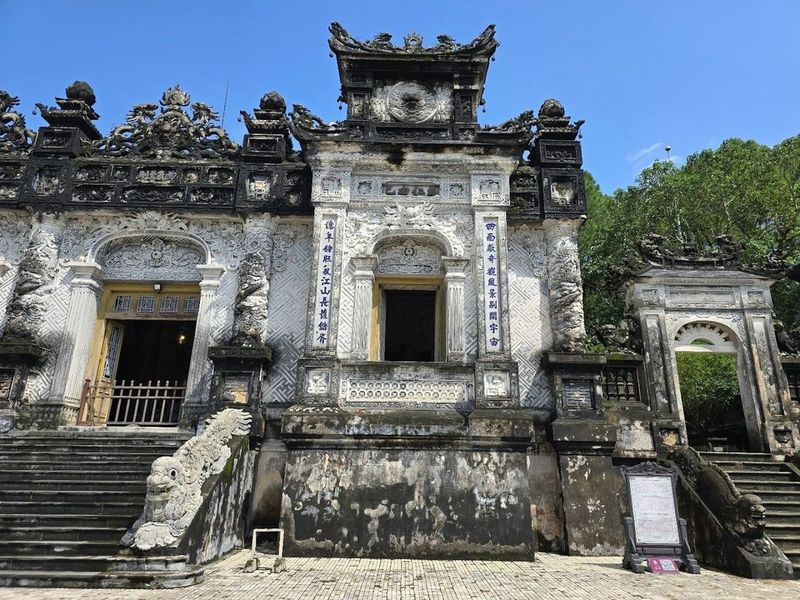
Mausoleum of Emperor Khai Dinh
Khai Dinh Tomb, located near Hue City on Chau Chu Mountain, was built for Emperor Khai Dinh of the Nguyen dynasty who passed away in 1925. Despite being unpopular due to his pro-French stance and language reforms, the mausoleum is a grand structure blending Eastern and Western architectural styles. It features dragon sculptures, an imperial court with statues, a lavishly furnished palace room, and a modest temple housing the emperor's grave.
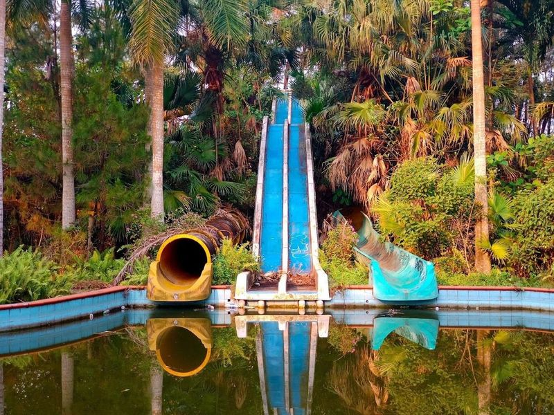
Hồ Thuỷ Tiên
Hồ Thuỷ Tiên, an abandoned water park located in Hue, Vietnam, has become a popular photography spot. The park features disused water slides and empty splash pools that are now overgrown by jungle flora. Despite being officially closed by the government, it continues to attract visitors who are eager to explore its mysterious and magical ambiance. Although guards prevent public access, adventurous travelers have found ways to enter the park and capture its haunting beauty through photography.
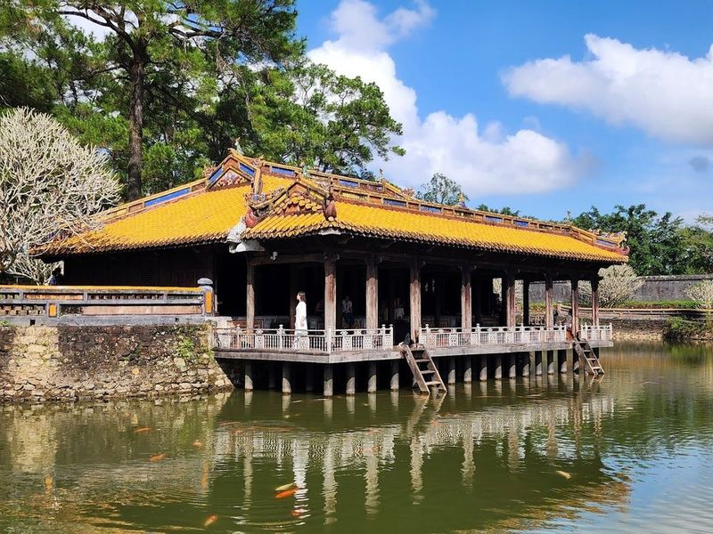
Mausoleum of Emperor Tu Duc
The Mausoleum of Emperor Tu Duc is a tomb and temple complex that pays tribute to the 19th-century ruler in a picturesque setting with a lily pond. Situated near the center of Hue city, this mausoleum is renowned for its harmonious structure and elegant architecture, standing out as beautiful mausoleums from the Nguyen Dynasty.
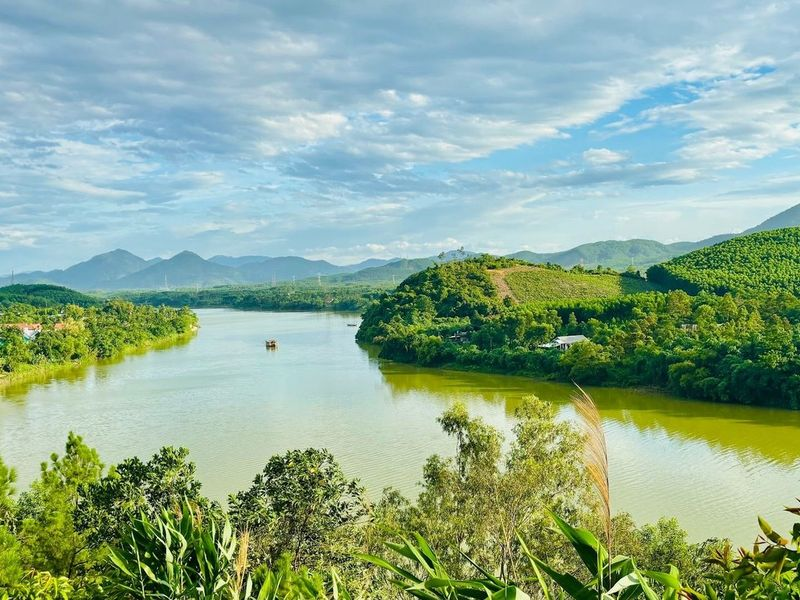
Vong Canh Hill
Vong Canh Hill, situated near Tu Duc Tomb in Hue, offers views of the Huong River, surrounding forests, and distant mountains. The area is also home to old bunkers and is a great spot for hiking. Visitors can enjoy the picturesque landscape from this elevated vantage point, taking in the mausoleum areas and the meandering Huong River. The hill has been transformed into a tourist park spanning over 219 hectares, easily accessible by both land and waterway.
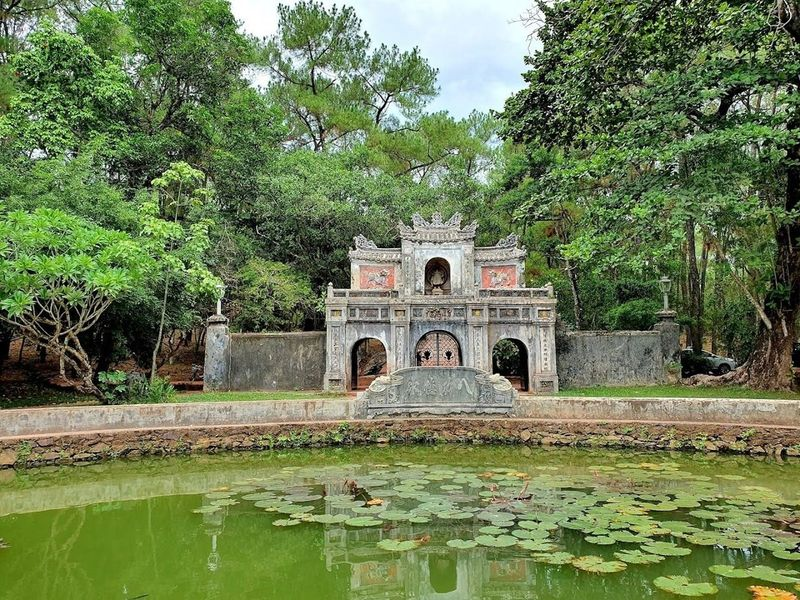
Chùa Từ Hiếu
Chùa Từ Hiếu, an ancient Buddhist temple in Hue, is a serene and peaceful place surrounded by a pine forest. Built in the 1840s, it was once inhabited by eunuchs from the Citadel and now houses around 70 monks. The pagoda is known for its touching history and tranquil atmosphere that attracts many visitors seeking peace and meditation.
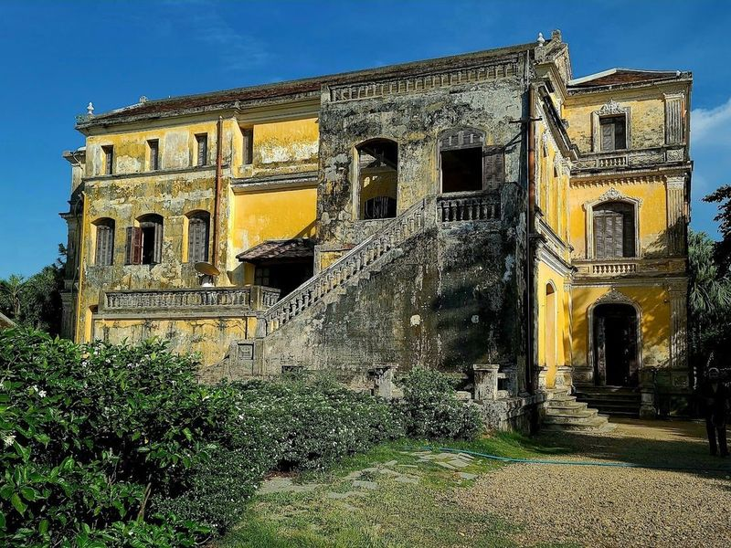
An Dinh Palace
An Dinh Palace, situated along the picturesque An Cuu Canal, served as the royal residence for Vietnam's last kings. Originally built as a private home for King Khai Dinh, it later became the dwelling place of Emperor Bao Dai and his family from 1945 to 1955. After undergoing meticulous restoration work adhering to UNESCO standards, this early 1900s palace now welcomes visitors eager to explore its period rooms and admire its impressive art collection.
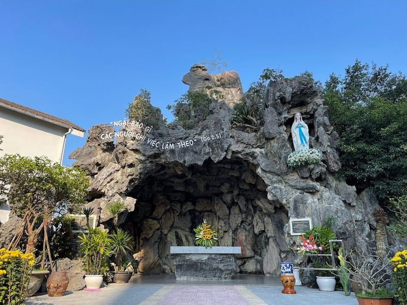
Nhà Thờ Chính Tòa Phủ Cam
Huế Archdiocese Cathedral, also known as Phủ Cam Church, is a significant landmark in the ancient capital with a history of nearly 400 years. The cathedral's architecture combines modern elements like stained-glass windows and soaring concrete arches with traditional materials such as stone, wood, and terracotta tiles. As the seat of the Archdiocese of Hue, it oversees several Roman Catholic dioceses in central Vietnam.